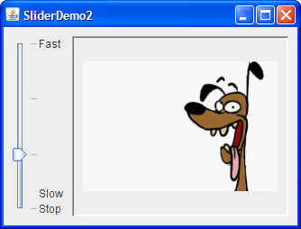

How to Use Sliders
A

Try this:
Below is the code from the
By default, spacing for major and minor tick marks is zero.
To see tick marks, you must explicitly set the spacing for either
major or minor tick marks (or both) to a non-zero value
and call the
Notice that the 

Each key-value pair in the hashtable
specified with the
JSlider component is intended to let the user easily enter a numeric value bounded
by a minimum and maximum value.
If space is limited,
a spinner
is a possible alternative to a slider.
The following picture shows an application that uses a slider to control animation speed:
Try this:
- Click the Launch button
to run SliderDemo using
Java™ Web Start
(download JDK 6).
Alternatively, to compile and run the example yourself,
consult the
example index.
- Use the slider to adjust the animation speed.
- Push the slider to 0 to stop the animation.
SliderDemo.java file that creates the slider in the previous example.
static final int FPS_MIN = 0;
static final int FPS_MAX = 30;
static final int FPS_INIT = 15; //initial frames per second
. . .
JSlider framesPerSecond = new JSlider(JSlider.HORIZONTAL,
FPS_MIN, FPS_MAX, FPS_INIT);
framesPerSecond.addChangeListener(this);
//Turn on labels at major tick marks.
framesPerSecond.setMajorTickSpacing(10);
framesPerSecond.setMinorTickSpacing(1);
framesPerSecond.setPaintTicks(true);
framesPerSecond.setPaintLabels(true);
setPaintTicks(true) method.
However, you also need labels for your tick marks.
To display standard, numeric labels at major tick mark locations,
set the major tick spacing, then call the setPaintLabels(true) method.
The example program provides labels for its slider in this way.
But you are not constrained to using only these labels.
Customizing Labels on a Slider
shows you how to customize slider labels.
In addition, a new slider feature available in JDK 6 allows you to set
a font for the JSlider component.
Font font = new Font("Serif", Font.ITALIC, 15);
framesPerSecond.setFont(font);
When you move the slider's knob, the stateChanged method of the
slider's ChangeListener is called.
For information about change listeners,
refer to
How to Write a Change Listener.
Here is the change listener code that reacts to slider value changes:
public void stateChanged(ChangeEvent e) {
JSlider source = (JSlider)e.getSource();
if (!source.getValueIsAdjusting()) {
int fps = (int)source.getValue();
if (fps == 0) {
if (!frozen) stopAnimation();
} else {
delay = 1000 / fps;
timer.setDelay(delay);
timer.setInitialDelay(delay * 10);
if (frozen) startAnimation();
}
}
}
stateChanged method
changes the animation speed only if the getValueIsAdjusting method
returns false.
Many change events are fired
as the user moves the slider knob.
This program is interested only
in the final result of the user's action.
Customizing Labels on a Slider
The demo below is a modified version of the SliderDemo that uses a slider with custom labels:The source for this program can be found in
SliderDemo2.java.
Click the Launch button
to run SliderDemo2 using
Java™ Web Start
(download JDK 6).
Alternatively, to compile and run the example yourself,
consult the
example index.
The following code creates the slider and customizes its labels:
//Create the slider
JSlider framesPerSecond = new JSlider(JSlider.VERTICAL,
FPS_MIN, FPS_MAX, FPS_INIT);
framesPerSecond.addChangeListener(this);
framesPerSecond.setMajorTickSpacing(10);
framesPerSecond.setPaintTicks(true);
//Create the label table
Hashtable labelTable = new Hashtable();
labelTable.put( new Integer( 0 ), new JLabel("Stop") );
labelTable.put( new Integer( FPS_MAX/10 ), new JLabel("Slow") );
labelTable.put( new Integer( FPS_MAX ), new JLabel("Fast") );
framesPerSecond.setLabelTable( labelTable );
framesPerSecond.setPaintLabels(true);
setLabelTable method
gives the position and the value of one label.
The hashtable key must be of an Integer type
and must have a value within the slider's range at which to place the label.
The hashtable value
associated with each key
must be a Component object.
This demo uses JLabel instances with text only.
An interesting modification would be to use
JLabel instances with icons
or buttons that move the knob to the label's position.
Use the createStandardLabels method of the JSlider
class to create a set of numeric labels positioned
at a specific interval.
You can also modify the table returned
by the createStandardLabels method in order to customize it.
The Slider API
The following tables list the commonly usedJSlider constructors and methods.
See
The JComponent Class
for tables of commonly used inherited methods.
The API for using sliders is divided into these categories:
- Creating the Slider
- Fine Tuning the Slider's Appearance
- Watching the Slider Operate
- Working Directly with the Data Model
| Constructor | Purpose |
|---|---|
| JSlider() | Creates a horizontal slider with the range 0 to 100 and an initial value of 50. |
|
JSlider(int min, int max) JSlider(int min, int max, int value) |
Creates a horizontal slider with
the specified minimum and maximum values.
The third int argument, when present,
specifies the slider's initial value.
|
|
JSlider(int orientation) JSlider(int orientation, int min, int max, int value) |
Creates a slider with the specified orientation, which
must be either JSlider.HORIZONTAL or
JSlider.VERTICAL.
The last three int arguments, when present,
specify the slider's minimum, maximum, and initial values, respectively.
|
| JSlider(BoundedRangeModel) | Creates a horizontal slider with the specified model, which manages the slider's minimum, maximum, and current values and their relationships. |
| Method | Purpose |
|---|---|
|
void setValue(int) int getValue() |
Sets or gets the slider's current value. The set method also positions the slider's knob. |
|
void setOrientation(int) int getOrientation() |
Sets or gets the orientation of the slider. Possible values
are JSlider.HORIZONTAL or JSlider.VERTICAL.
|
|
void setInverted(boolean) boolean getInverted() |
Sets or gets whether the maximum is shown at the left of a horizontal slider or at the bottom of a vertical one, thereby inverting the slider's range. |
|
void setMinimum(int) int getMinimum() void setMaximum(int) int getMaximum() |
Sets or gets the minimum or maximum values of the slider. Together, these methods set or get the slider's range. |
|
void setMajorTickSpacing(int) int getMajorTickSpacing() void setMinorTickSpacing(int) int getMinorTickSpacing() |
Sets or gets the range between major and minor ticks. You must
call setPaintTicks(true) for the tick marks to appear.
|
|
void setPaintTicks(boolean) boolean getPaintTicks() |
Sets or gets whether tick marks are painted on the slider. |
|
void setPaintLabels(boolean) boolean getPaintLabels() |
Sets or gets whether labels are painted on the slider.
You can provide custom labels with setLabelTable or
get automatic labels by setting the major tick spacing
to a non-zero value.
|
|
void setLabelTable(Dictionary) Dictionary getLabelTable() |
Sets or gets the labels for the slider.
You must call setPaintLabels(true) for the labels to appear.
|
|
Hashtable createStandardLabels(int) Hashtable createStandardLabels(int, int) |
Creates a standard set of numeric labels.
The first int argument specifies the increment,
the second int argument specifies the starting point.
When left unspecified,
the starting point is set to the slider's minimum number.
|
| setFont(java.awt.Font) | Sets the font for slider labels . |
| Method | Purpose |
|---|---|
| void addChangeListener(ChangeListener) | Registers a change listener with the slider. |
| boolean getValueIsAdjusting() | Determines whether the user gesture to move the slider's knob is complete. |
| Class, Interface, or Method | Purpose |
|---|---|
| BoundedRangeModel | The interface required for the slider's data model. |
| DefaultBoundedRangeModel | An implementation of the BoundedRangeModel
interface.
|
|
void setModel() getModel() (in JSlider)
|
Sets or gets the data model used by the slider.
You can also set the model by using the
constructor that takes a single argument
of type BoundedRangeModel.
|
Examples that Use Sliders
This table shows the examples that useJSlider
and where those examples are described.
| Example | Where Described | Notes |
|---|---|---|
SliderDemo
|
This section | Shows a slider with labels at major tick marks. |
SliderDemo2
|
This section | Shows a vertical slider with custom labels. |
Converter
|
Using Models, How to Use Panels | A measurement conversion application
featuring two sliders that share data and
have custom BoundedRangeModels.
|